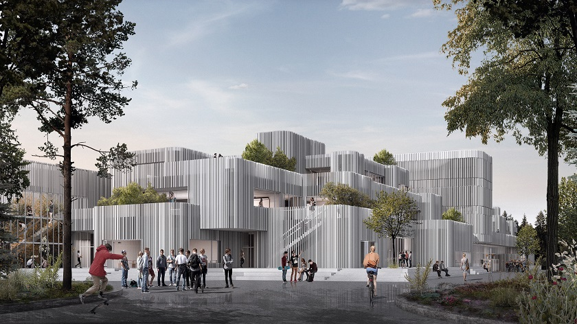

A jövő iskolájában a tanórák rugalmasak. Nem feltétlenül 45 percesek, hanem projektek köré szerveződnek. Van idő gondolkodni, kérdezni, kipróbálni. Kevesebb frontális tanítás, több közös munka, kísérletezés és valódi probléma megoldása. A diákok saját tempóban haladnak, és nem baj, ha valaki lassabban vagy gyorsabban tanul.
A jövő iskolájában a tanulás aktív és élményszerű folyamat. A diákok nem csak hallgatják az anyagot, hanem kérdeznek, kísérleteznek, alkotnak és együtt gondolkodnak. Saját tempóban haladhatnak, különböző tanulási módszereket választhatnak, és valódi élethelyzeteken keresztül sajátítják el a tudást. A tanulás célja nem a bemagolás, hanem a megértés, az önálló gondolkodás és a problémamegoldó képesség fejlesztése.
A jövő iskolájában az értékelés nem a jegyekről szól, hanem a fejlődésről. A diákok rendszeres, szöveges visszajelzést kapnak arról, miben erősek és min érdemes még dolgozniuk. A hibák nem büntetést jelentenek, hanem tanulási lehetőséget. Az értékelés célja az önbizalom erősítése és az, hogy mindenki lássa a saját előrehaladását, ne másokhoz mérje magát.
készítette: Krucsay Bogdán